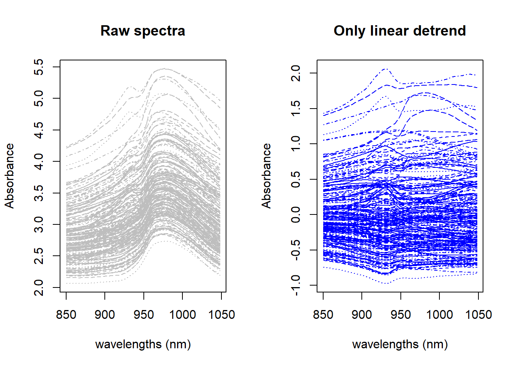
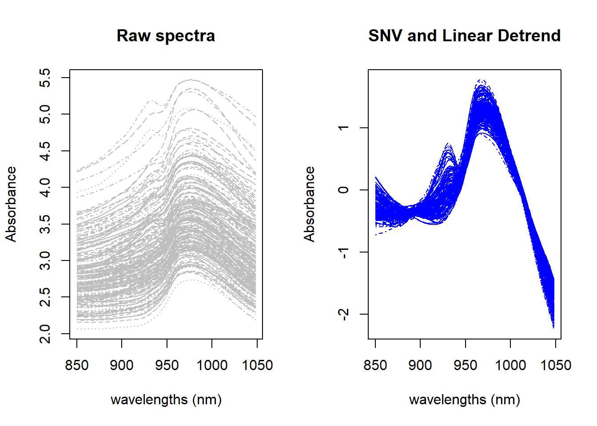
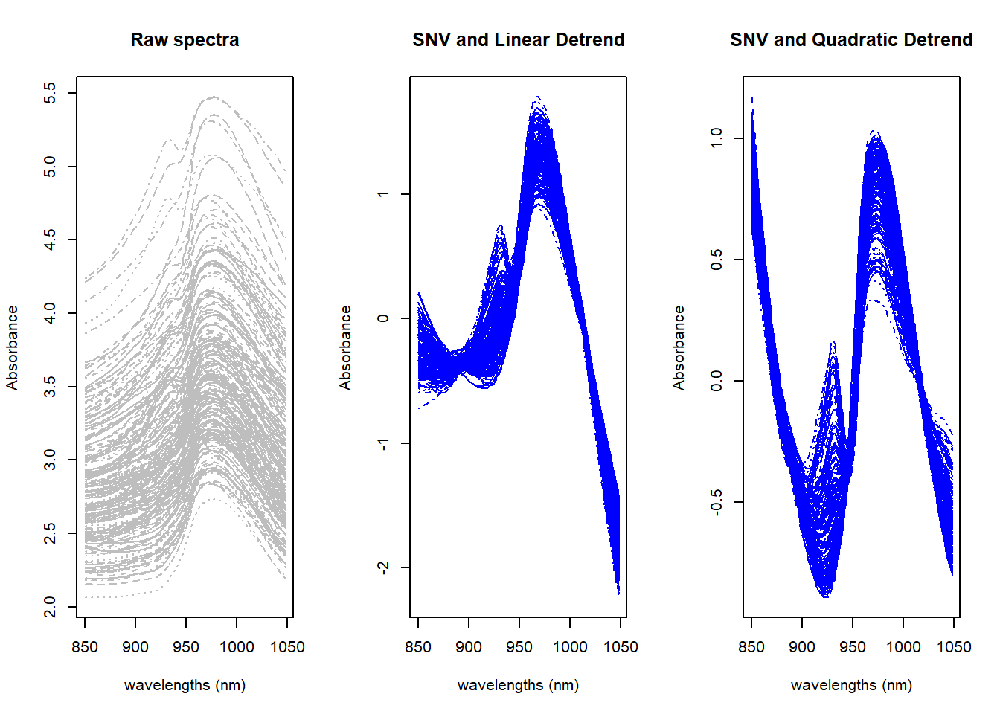

We can remove some files we have use for some visualization: it is important to maintain the dataframes we will use for the model development with different math treatments and the raw spectra.
As we can see we have the Sample ID, the parameters with the laboratory values for moisture, fat and protein, and the spectra without treatment (raw) and with the SNV treatment. At the moment we take apart the MSC math treatment , we have calculated in the previous post, and keep it for future use.
DETREND math treatment
With the detrend we want to remove the linear trend caused normally by the scatter. This shift is no so obvious in the wavelength range we are using in this tutorial, but when using NIR spectra range (1100 - 2500 nm) the shift increase quite a lot and can be linear or quadratic depending on the type of sample or sample presentation. Detrend normally is combined with SNV, and this combination is in the list of some of the commercial software available for NIR or NIT instruments. The math treatments we can see in this post are:
Detrend linear only
SNV and linear detrend
SNV and quadratic detrend
Detrend only (linear)
We will use the {pracma} library and the function “detrend”.
library(pracma)
Let´s apply the function to the raw spectra, and see the result:
dt_spec <- pracma::detrend(tecator$spec)par(mfrow=c(1, 2))matplot(colnames(tecator$spec), t(tecator$spec), type ="l", xlab ="wavelengths (nm)", ylab ="Absorbance", main ="Raw spectra", col ="grey")matplot(colnames(dt_spec), t(dt_spec), type ="l", xlab ="wavelengths (nm)", ylab ="Absorbance", main ="Only linear detrend", col ="blue")

Figure 1: Raw vs. Detrend only spectra
in the figure we compare the spectra without any treatment (left) with the spectra with the linear detrend, and we can see how the spectra become flatter due to the trend removal, but the result can be improved with some normalization to remove the baseline shift, so for that reason we use the detrend and SNV combined.
SNV and linear detrend
In this case we will use another library {prospectr} , using p = 1 to remove the linear trend.
Now we can compare the result with the raw spectra
par(mfrow=c(1, 2))matplot(colnames(tecator$spec), t(tecator$spec), type ="l", xlab ="wavelengths (nm)", ylab ="Absorbance", main ="Raw spectra", col ="grey")matplot(colnames(snvdt1_spec), t(snvdt1_spec), type ="l", xlab ="wavelengths (nm)", ylab ="Absorbance", main ="SNV and Linear Detrend", col ="blue")

Figure 2: Raw vs. SNV+DT1
As we can see there is an improvement in the result. We can see if the change from p = 1 to p = 2 make some differences:
Now we can compare the result with the raw spectra and linear detrend spectra.
par(mfrow=c(1, 3))matplot(colnames(tecator$spec), t(tecator$spec), type ="l", xlab ="wavelengths (nm)", ylab ="Absorbance", main ="Raw spectra", col ="grey")matplot(colnames(snvdt1_spec), t(snvdt1_spec), type ="l", xlab ="wavelengths (nm)", ylab ="Absorbance", main ="SNV and Linear Detrend", col ="blue")matplot(colnames(snvdt2_spec), t(snvdt2_spec), type ="l", xlab ="wavelengths (nm)", ylab ="Absorbance", main ="SNV and Quadratic Detrend", col ="blue")

Figure 3: Raw vs. SNV+DT1 and SNV+DT2
Detrend correlations with Protein depending on type
Let´s check the correlations for the different math treatment combinations using detrend to get some conclusions.
Figure 4: Wavelength correlation with protein for the different Detrend treatments
As we can see it seems that there are an improvement in the correlation when using Quadratic Detrend combined with SNV. Anyway we wiil see during the models developments if the statistics confirm this.
We can add all these three new math-treatments to the tecator dataframe for future use: